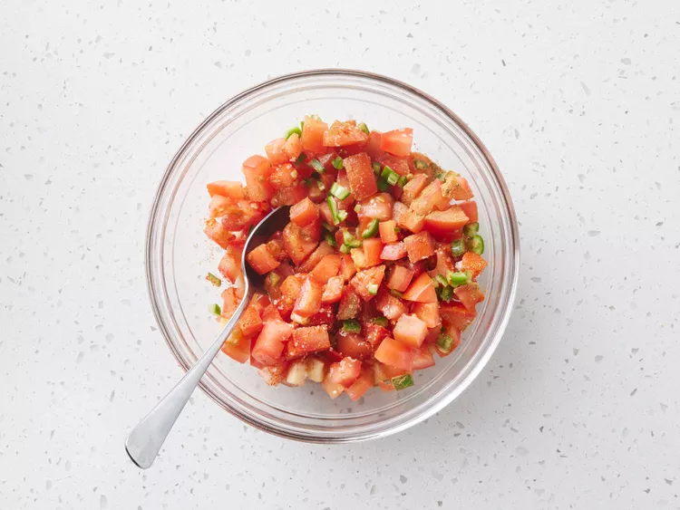

Shakshuka Recipe
← Home
Shakshuka (or shakshouka) is a traditional Tunisian dish featuring poached eggs in a spicy tomato sauce with onions, bell pepper, and garlic. It's usually eaten for breakfast, but I think it makes a tasty lunch or dinner, served with lots of bread to mop up the sauce.
Ingredients:
- 3 tablespoons olive oil
- 1 ⅓ cups chopped onion
- 1 cup thinly sliced bell peppers
- 2 cloves garlic, minced, or to taste
- 2 ½ cups chopped tomatoes
- 1 hot chile pepper, seeded and finely chopped, or to taste
- 1 teaspoon ground cumin
- 1 teaspoon paprika
- 1 teaspoon salt
- 4 large eggs
Directions:
- Step 1: Gather all ingredients.

- Step 2: Heat olive oil in a skillet over medium heat. Stir in onion, bell pepper, and garlic; cook and stir until vegetables have softened and onion has turned translucent, about 5 minutes.

Note: You can use a mix of red, yellow, and green bell peppers for a colorful dish.
- Step 3: Stir in tomatoes, chile pepper, cumin, paprika, and salt.

- Step 4: Stir tomato mixture into onion mixture. Simmer, uncovered, until tomato juices have cooked off, about 10 minutes.

- Step 5: Make 4 wells in the tomato mixture and crack an egg into each well. Cover skillet and cook until egg whites are set but yolks are still runny, about 5 minutes.

- Step 6: Serve and enjoy!